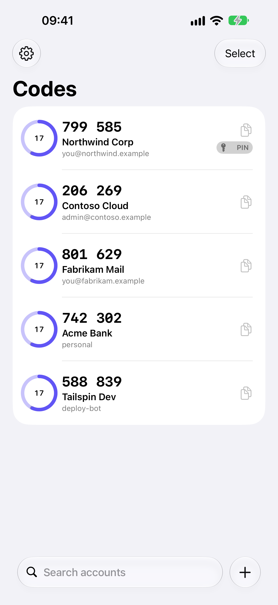
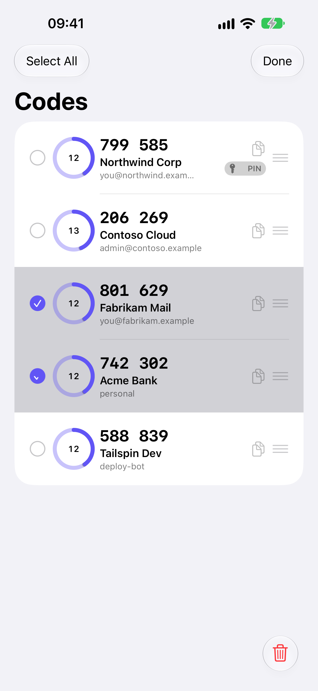
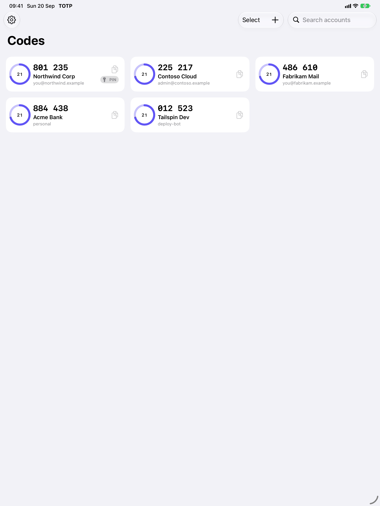

A native authenticator for iPhone, iPad and Mac. Your codes are generated on your device, encrypted at rest, and synced only through your own iCloud — if you want them synced at all.
Some workplace logins expect a fixed PIN typed straight before the six-digit code. Give an account a prefix and TOTP copies and fills the whole value for you. The PIN is never shown on screen.
AutoFill on iPhone, iPad and Mac fills one-time-code fields — and password fields, when your account uses a PIN. A menu bar app on the Mac keeps codes one click away.
Home Screen and Lock Screen widgets, a Control Centre button that copies a code in one tap, and Shortcuts actions for anything else.
No account to create, no analytics, no third-party code. Secrets are sealed with ChaChaPoly before they touch storage, using a key shared only through your iCloud Keychain.



Add an account. Tap +, then scan the QR code your service shows
when you turn on two-factor authentication. You can also choose a saved QR image, paste an
otpauth:// link, or type the secret in by hand.
Turn on AutoFill. iPhone and iPad: Settings ▸ General ▸ AutoFill & Passwords, then enable TOTP. Mac: System Settings ▸ General ▸ AutoFill & Passwords.
Sync, optionally. Sign in to iCloud and your accounts follow you to your other devices. Everything is encrypted before it leaves the device.
iOS 27, iPadOS 27 or macOS 27. One purchase covers all your devices.